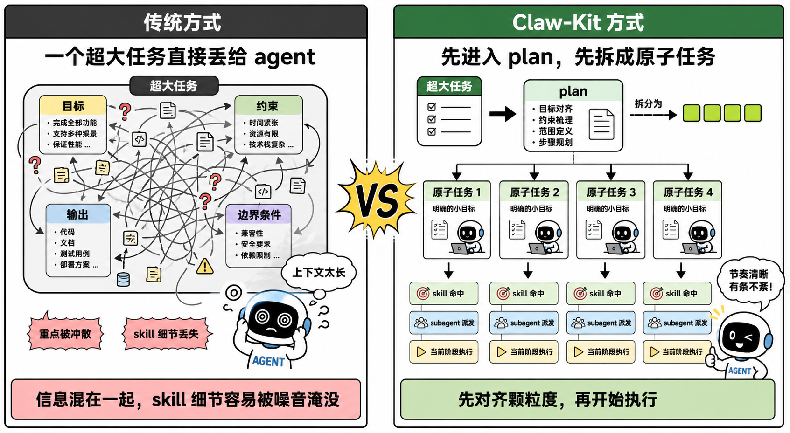
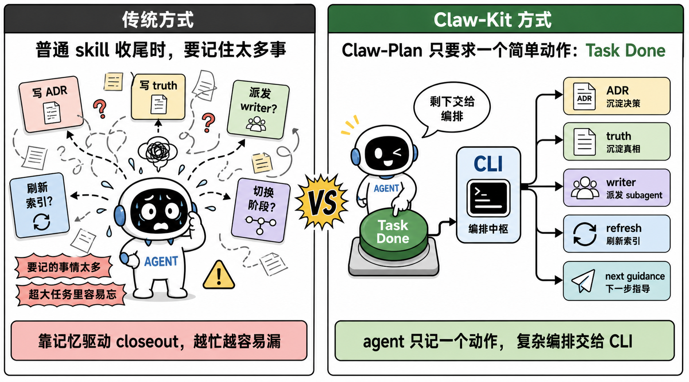
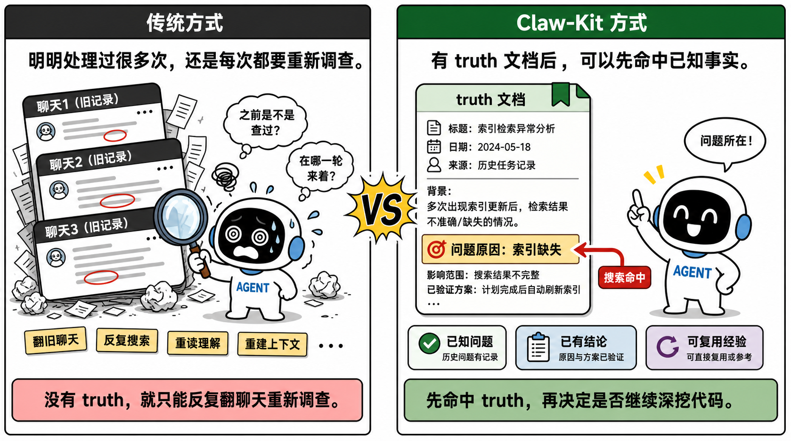

先把任务颗粒度对齐。再让 agent 执行。
复杂任务先进入 plan。先拆到 agent 真正接得住的尺度。再开始消耗上下文和技能。
technical principles
Claw-Kit 不是再造一个会写代码的 agent。 它更接近一层面向复杂项目、长时任务的 harness。 用计划结构、CLI 合同、分段式 guidance 和可沉淀的项目知识， 把一次对话里的“会做事”变成一个项目里“能持续推进”。
复杂任务先进入 plan。先拆到 agent 真正接得住的尺度。再开始消耗上下文和技能。
插件和 CLI 配合，不是多一层壳。是把关键分流收口到可验证的命令结果里。
任务推进中的事实、取舍和复盘，需要沉淀成 truth 与 ADR。下一轮才能继续站在同一个项目现实上工作。

Claw-Kit 把 plan 放在中心。
不是为了多一道流程。
是为了先把任务切到 agent 接得住的尺度。
大任务的问题，不是 agent 不会做。 是它一次拿到的东西太多。 目标、约束、阶段性输出混在一起。 最后在长上下文里慢慢失焦。
所以高复杂度请求先进入正式的 .claw workflow。
先过 complexity gate。
再进入 planning。
再从 workflowGuidance 接下一步。
对开启 planning 的项目，claw plan create 会先落到 process.discussing。
把讨论和激活桥准备好。
不需要 planning 的项目，才直接进入 process.active。

Claw-Kit 没把插件做成一个自己推演完整流程的黑箱。 它明确依赖 CLI。 原因很简单。
如果每一步都让 agent 自己判断下一步是什么、该不该收尾、该不该刷新知识， 工作流最终会越来越依赖即时发挥。
所以稳定合同面放在 CLI。
无论是 claw plan write、claw plan edit 还是 claw plan done，
对外暴露的都不是渲染层，而是紧凑的 workflowGuidance 和 planSummary。
如果只靠普通 skill 来约束收尾，agent 往往要自己记住一整串动作。 做完任务后，要把讨论沉淀成 ADR。 要把有价值的执行内容整理成 truth。 还要判断要不要刷新索引、要不要继续派发 writer、要不要切到下一阶段。
这些要求单独看都合理。 但一旦任务很大、上下文很长、执行步骤很多， 注意力就会被冲淡。 最后最容易忘掉的，恰恰是这些“收尾但重要”的动作。
truth-writer 和 adr-writer。
Claw-Plan 的做法正好相反。
不要求 agent 在脑子里长期背着整套 closeout 清单。
做完当前任务后，调用一次 Task Done 就可以。
对 agent 来说，这个动作很简单。 也很容易执行。 但在这个简单动作背后， CLI 会把 closeout、writer 派发、下一步 guidance 和后续刷新逻辑串起来。
这就是为什么 Claw-Kit 要把 CLI + 分段式 guidance + task 拆分 放在一起做编排。 不是为了把流程做复杂。 而是为了把真正复杂的部分，从 agent 的即时注意力里拿走。
这也是为什么 `using-claw-kit` 在 Codex 里被收敛成唯一可见入口。 入口越单一，主流程越不容易漂。

复杂项目的问题，不只是这次有没有做完。 更是下一次还能不能接着做。
如果关键决策只留在聊天记录里， agent 即使短时间内很快， 项目本身还是会持续失忆。
所以文档沉淀被放进 closeout。
计划推进中，可以让 subagent 记录关键事实、设计取舍和复盘。
完成阶段，再交给 truth-writer 和 adr-writer 写回项目。
这样做不是为了把文档越写越多。 而是为了先把项目已经确认过的事实留下来。 下次遇到同类问题，agent 不需要从零重新调查一遍。
但 truth 只能回答“项目已经知道什么”。 真正要落到当前代码，还需要一层代码关系理解。 这就是 GitNexus 接进来的位置。
在 Claw-Kit 里，这两层能力被故意拆开。
claw search 优先回收 truth、ADR、memory 和额外声明的文档路径。
GitNexus 再补上符号关系、调用链和当前代码结构。
所以 claw search 的定义也必须保持清晰。
它是项目级文档 recall。
不是代码搜索。
它优先帮 agent 回到项目已经确认过的事实面，再展开调查。 到了需要验证实现细节的时候，再配合 GitNexus 或直接读源码。
索引入口固定为 claw search index --refresh。
refresh 是显式动作。
如果向量索引不存在，搜索会明确返回 MEMORY_VECTOR_INDEX_REQUIRED。
不会悄悄退化。
| 对比项 | 更占优 | 原因 |
|---|---|---|
| 冷启动找方向 | claw search + GitNexus | claw search 先恢复已沉淀的 truth / ADR，能快速知道历史决策、系统边界和关键词；GitNexus 再给出代码关系，减少盲搜。 |
| 精确验证当前代码 | 传统搜索 | rg + 读源码直接面对当前 checkout，最适合确认具体实现、硬编码权重、配置字段和测试断言。 |
| 上下文占用控制 | claw search + GitNexus | claw search 返回短 snippet，GitNexus 返回结构化符号关系；传统宽泛 rg 容易一次吐出大量源码、测试和文档。 |
| 历史与设计理解 | claw search + GitNexus | claw search 命中的是工作流沉淀的 truth / ADR，不只是文本匹配；它能解释“为什么这样设计”，而传统搜索通常只能说明“代码现在是什么”。 |
| 最终可靠答案 | 组合使用 | claw search 提供高可信项目记忆，GitNexus 提供代码图谱，传统搜索提供行级源码证据；三者合用比单一路径更稳。 |
当项目显式开启 gitnexus 后，
claw plan done 会在 closeout 里刷新它的分析状态。
这样下一轮代码调查也能接得住。